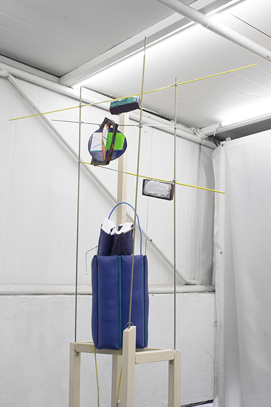

texts
publications
A Multi-level Crossing Diagram, 2018
Open Studio, 2018
A List of Shapes, 2017
Stands with shrunk toes, 2016
Under The Circular, 2015
CV
Copyright © 2018 Lim Cha
all rights reserved.
|
형태 일람, 공간사일삼, 서울, 2017
A List of Shapes, artist run space four one three, Seoul, 2017
형태 일람 1층 전시 전경
형태 일람, 공간사일삼, 서울, 2017
A List of Shapes, artist run space four one three, Seoul, 2017
일시: 2017년 4월 22일 - 5월 6일
오프닝: 4월 22일 (토) 오후 6시
관람: 오후 1시 - 7시 (월) 휴관
전시 서문: 정여은 포스터
디자인: 리사익 (http://leesaik.org/)
Introduction: Yeoeun Jung
Graphic design: Leesaik
전시 서문과 정보 (https://www.41-3.org/in-out16)
전시 기간동안 배포한 책자에는 전시 서문, 작업자와 필자의 대담록이 실려있습니다.

연결과 방사 Radial,Connected
나무, 철사, 폴리에스티렌, 석고, 아크릴릭, 39x25x163cm, 2017
Float, Connected
석고, 고무 튜브, 볼트, 철사, 가변 설치 2017
Exhibition introduction and information are uploaded at a link above (KR).
Printed materials are distributed during the exhibition, which had an interview with Yeoeun Jung and Lim Cha.
출판물 기록사진 publication archive: (https://twitter.com/leesaaikk/status/860377785000271872) |